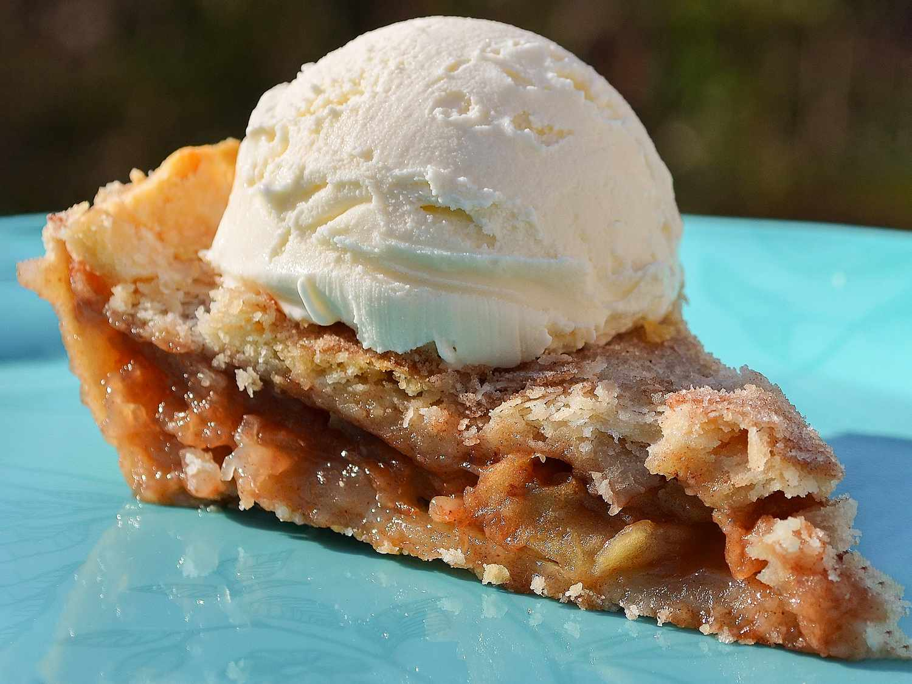

Apple Pie
Homepage

A delicious recipe that is a staple for every baker!
Ingredients
- White Sugar (1/2 cup)
- Flour (2 tablespoons)
- Ground Cinnamon (2 teaspoons)
- Unsalted Butter (3 tablespoons)
- Double-Crust Pie Pastry (1 package/14.1 ounce)
- 6 Apples (peeled, cored and sliced)
Steps
- Preheat the oven to 350 degrees F (175 degrees C). Place a baking sheet on an oven rack.
- Stir sugar, flour, and cinnamon together in a small bowl until well combined. Cut butter into small pieces; divide into two equal piles.
- Roll out pastry to an 11- or 12-inch circle; press into a 9-inch pie pan. Roll out top crust and set aside.
- Place sliced apples into a large bowl. Pour sugar mixture over top and add 1/2 of the butter pieces. Toss apples until thoroughly coated. Pour into the pastry-lined pie pan.
- Dot apples with remaining butter. Place second pastry on top. Seal edges and cut steam vents in top crust.
- Set pie on the baking sheet in the preheated oven. Bake until filling is bubbly and crust is golden brown, 50 minutes to 1 hour.
Original AllRecipes Recipe